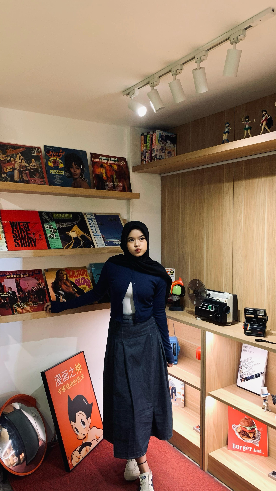

🤍 Untuk Kamu 🤍
Hai. Happy birthday ya. Semoga semua yang kamu impikan satu per satu bisa tercapai. Terima kasih karena tanpa sadar pernah menjadi bagian dari cerita hidupku. Jaga diri baik-baik. 🤍

Hai. Happy birthday ya. Semoga semua yang kamu impikan satu per satu bisa tercapai. Terima kasih karena tanpa sadar pernah menjadi bagian dari cerita hidupku. Jaga diri baik-baik. 🤍